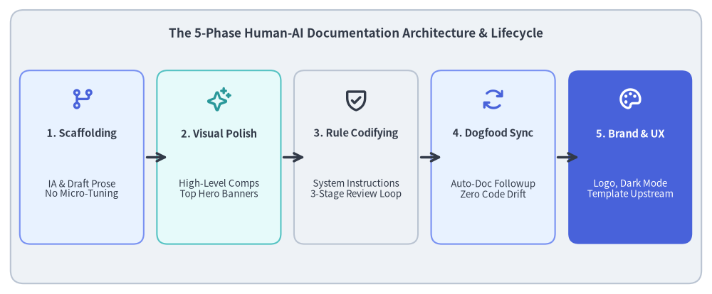
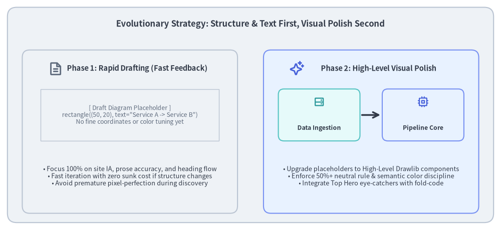
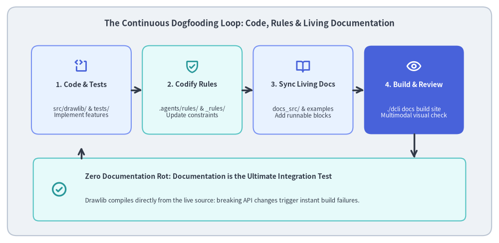
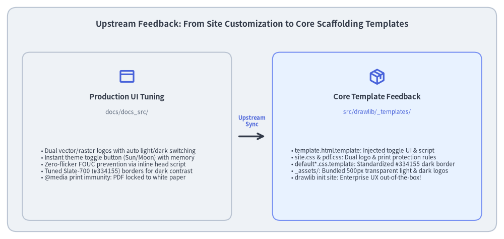

事例紹介: AI エージェントによるドキュメントサイト構築
現代のソフトウェアライブラリには、アーキテクチャや API の機能、設計パターンを分かりやすく伝えるための充実したビジュアルドキュメントが不可欠です。しかし、従来の技術ドキュメントはすぐに**ドキュメントの形骸化・陳腐化（Doc Rot）**という罠に陥ります。外部の作図ツールで描かれた図はコードベースと乖離し、スクリーンショットは古くなり、数十ページにわたる手動メンテナンスは維持不能になります。
79ページの HTML、6,900件以上の相互参照リンク、400点を超える純粋な Python ダイアグラムで構成される Drawlib 自身の公式ドキュメントサイトは、人間と AI エージェントの協働によって構築され、現在も自律的に進化し続けています。
本事例では、**「コードとしての図解ドキュメント（Illustrated Documentation as Code）」**と AI ドッグフーディングを活用し、この大規模ドキュメントサイトを設計・執筆・洗練・継続保守するために実践した5フェーズの手法を解説します。

Source Code
from drawlib.canvas import save, setup
from drawlib.icons import phosphor
from drawlib.lines import line
from drawlib.shapes import rectangle
from drawlib.styles import Colors, Styles
from drawlib.text import text
setup(width=135, height=56)
# Title & background card
rectangle((67.5, 28.0), width=131, height=52, style=Styles.Neutral.patch(shape_r=2.5))
text(
(67.5, 49.5),
"The 5-Phase Human-AI Documentation Architecture & Lifecycle",
style=Styles.DarkBold.patch(text_size=12.2),
)
# 5 Phase Cards
phases = [
(15.5, "1. Scaffolding", "IA & Draft Prose\nNo Micro-Tuning", phosphor.git_branch, Styles.PrimaryNeutral, Colors.Primary),
(41.5, "2. Visual Polish", "High-Level Comps\nTop Hero Banners", phosphor.sparkle, Styles.SecondaryNeutral, Colors.Secondary),
(67.5, "3. Rule Codifying", "System Instructions\n3-Stage Review Loop", phosphor.shield_check, Styles.Neutral, Colors.Dark),
(93.5, "4. Dogfood Sync", "Auto-Doc Followup\nZero Code Drift", phosphor.arrows_clockwise, Styles.PrimaryNeutral, Colors.Primary),
(119.5, "5. Brand & UX", "Logo, Dark Mode\nTemplate Upstream", phosphor.palette, Styles.PrimaryFlat, Colors.White),
]
for cx, title, desc, icon_fn, card_st, icon_col in phases:
is_accent = (cx > 110)
rectangle((cx, 26.0), width=23.5, height=33, style=card_st.patch(shape_r=2.0))
icon_st = Styles.WhiteBold if is_accent else Styles.PrimaryBold.patch(icon_color=icon_col)
icon_fn((cx, 37.0), width=4.8, style=icon_st)
t_st = Styles.WhiteBold if is_accent else Styles.DarkBold
d_st = Styles.White if is_accent else Styles.Dark
text((cx, 30.5), title, style=t_st.patch(text_size=10.5))
text((cx, 20.0), desc, style=d_st.patch(text_size=9.6))
# Arrows between cards
for x in [27.25, 53.25, 79.25, 105.25]:
line((x + 0.5, 26.0), (x + 4.5, 26.0), arrow_head="->", style=Styles.DarkBold)
save()
1. 根本的な課題: ツールの分断とドキュメントの陳腐化
従来のソフトウェア開発において、技術ドキュメントは深刻なワークフローの分断を抱えています。
- 分断されたツールチェーン: 開発者はコードを Git で管理し、文章を別システム（Wiki、Notion、Google ドキュメント）で執筆し、図をサードパーティ製の GUI ツール（draw.io、Figma、OmniGraffle）で作成します。
- 非同期な乖離（ドリフト）: API の引数変更やコンポーネントのリファクタリングが行われた際、外部の作図ファイルを開いて修正し、静的 PNG を書き出して再アップロードする作業は大きな負担となります。その結果、図解は必然的に実装の現実から乖離していきます。
- レビュー時の高い認知負荷: 読み手は古いスクリーンショットや図と最新のコードを頭の中で照合しなければならず、混乱やドキュメント全体への信頼低下を招きます。
Drawlib の解決策: 「コードとしての図解ドキュメント」
Drawlib は、技術図解と解説文の双方をバージョン管理されたコードとして扱うことで、この分断を解消します。
- 信頼できる唯一の情報源（Single Source of Truth: SoT）: Markdown の本文と実行可能な Python 描画ブロックが、同じリポジトリ内（
docs_src/）に並んで共存します。 - ヘッドレスな一括ビルドパイプライン:
./dcli docs build siteを実行するだけで、ドキュメント本文のコンパイルと数百枚の図解のレンダリングが同時に完了します。 - ドッグフーディングによる品質保証: ドキュメントのビルド処理が開発中のライブラリ本体（
src/drawlib/）を直接実行します。API の破壊的変更や無効なスタイルトークンがあれば即座にドキュメントビルドが失敗するため、マージ前にリグレッションを確実に検知できます。
2. フェーズ 1: 情報アーキテクチャ設計と高速ドラフティング
包括的なドキュメントサイトを立ち上げる際、初日からピクセル単位で完璧に整列した美しい図を描こうとしてしまうのは典型的な失敗パターンです。実際には、全体構造を模索している初期段階での時期尚早なビジュアル調整は大きな手戻りを生みます。

Source Code
from drawlib.canvas import save, setup
from drawlib.icons import phosphor
from drawlib.lines import line
from drawlib.shapes import rectangle
from drawlib.styles import Colors, Styles
from drawlib.text import text
setup(width=135, height=62)
# Outer container card
rectangle((67.5, 31.0), width=131, height=58, style=Styles.Neutral.patch(shape_r=2.5))
text(
(67.5, 55.5),
"Evolutionary Strategy: Structure & Text First, Visual Polish Second",
style=Styles.DarkBold.patch(text_size=12.0),
)
# Left Column: Phase 1 Rapid Draft
rectangle((35.0, 26.5), width=58, height=44, style=Styles.Neutral.patch(shape_r=2.0))
phosphor.file_text((15.0, 43.5), width=4.0, style=Styles.MutedBold)
text((37.0, 43.5), "Phase 1: Rapid Drafting (Fast Feedback)", style=Styles.DarkBold.patch(text_size=10.5))
# Draft placeholder simulation
rectangle((35.0, 31.0), width=48, height=14, style=Styles.Neutral.patch(line_style="dashed", shape_line_width=1.0))
text((35.0, 31.0), "[ Draft Diagram Placeholder ]\nrectangle((50, 20), text=\"Service A -> Service B\")\nNo fine coordinates or color tuning yet", style=Styles.Muted.patch(text_size=8.8))
# Draft principles list
text((35.0, 14.5), "• Focus 100% on site IA, prose accuracy, and heading flow\n• Fast iteration with zero sunk cost if structure changes\n• Avoid premature pixel-perfection during discovery", style=Styles.Dark.patch(text_size=9.2))
# Right Column: Phase 2 Visual Refinement
rectangle((100.0, 26.5), width=58, height=44, style=Styles.PrimaryNeutral.patch(shape_r=2.0))
phosphor.sparkle((80.0, 43.5), width=4.0, style=Styles.PrimaryBold)
text((102.0, 43.5), "Phase 2: High-Level Visual Polish", style=Styles.DarkBold.patch(text_size=10.5))
# Refined components simulation
rectangle((86.0, 31.0), width=22, height=14, style=Styles.SecondaryNeutral.patch(shape_r=1.5))
phosphor.hard_drives((86.0, 34.5), width=3.2, style=Styles.SecondaryBold)
text((86.0, 27.5), "Data Ingestion", style=Styles.DarkBold.patch(text_size=8.8))
line((97.5, 31.0), (102.5, 31.0), arrow_head="->", style=Styles.DarkBold)
rectangle((114.0, 31.0), width=22, height=14, style=Styles.PrimaryNeutral.patch(shape_r=1.5))
phosphor.cpu((114.0, 34.5), width=3.2, style=Styles.PrimaryBold)
text((114.0, 27.5), "Pipeline Core", style=Styles.DarkBold.patch(text_size=8.8))
# Refined principles list
text((100.0, 14.5), "• Upgrade placeholders to High-Level Drawlib components\n• Enforce 50%+ neutral rule & semantic color discipline\n• Integrate Top Hero eye-catchers with fold-code", style=Styles.Dark.patch(text_size=9.2))
save()
2.1. AI エージェントとの対話による情報アーキテクチャ設計
最初のステップは、AI コーディングアシスタントとの対話的な設計ディスカッションでした。
- 想定読者と学習ステップの設計: ドキュメント全体を9つのテーマ別セクション（
01_getting_started、02_drawing_primitives、04_smartarts、05_charts、06_diagrams、07_graph、08_animations、09_doc_builder_and_cli、10_ai_agents_and_advanced）に分割しました。 - ナビゲーションの単一情報源化: 階層構造を
navbar.mdに定義し、各ページが重複なく明確な責務を持つようにマッピングしました。
2.2. 「構造と本文ファースト」のドラフティング原則
初期ページの作成段階では、図の細かな座標調整に時間をかけないようエージェントに明確に指示しました。
- まず Markdown の解説本文、コード例、仕様説明を網羅的に執筆します。
- 図解が必要な箇所には、シンプルな基本図形だけを使った軽量なプレースホルダブロックを出力します。
from drawlib.canvas import save, setup from drawlib.shapes import rectangle setup(width=100, height=30) rectangle((50, 15), width=80, height=20, text="Architecture Overview (Draft)") save() - メリット: 人間のレビュアーは数分でサイト全体のストーリー展開や技術的正確性を検証して章構成を自在に組み替えることができ、何時間もかけて調整した図の座標を無駄に捨てる手戻りが一切発生しません。
3. フェーズ 2: ビジュアルの洗練とトップヒーロー図の導入
サイト全体の構造と各ページのアウトラインが固まった段階で、ビジュアルアセットの体系的なアップグレードを開始しました。
3.1. 基本図形から高水準コンポーネントへの刷新
プレースホルダの矩形を、用途に最適化された Drawlib の高水準コンポーネントへと置き換えました。
- クラウド・マイクロサービス構成: 手動配置の矩形を
drawlib.diagrams.architectureと公式 Phosphor / GCP アイコンバッジへ刷新。 - パイプライン・処理シーケンス: 手書きの線を
drawlib.smartarts.ChevronProcessやdrawlib.diagrams.sequenceへ刷新。 - リレーショナルモデル・状態遷移:
drawlib.diagrams.erおよびdrawlib.diagrams.stateで構造化。 - トポロジ・DAG:
drawlib.graphを用いて自動レイアウト化。
3.2. 「トップヒーロー（Top Hero）」アイキャッチ基準
読者の関心を引きつけ視覚的な理解を助けるため、ドキュメント全体でトップヒーロー原則を確立しました。
- 5〜15行目への配置: すべてのドキュメントページにおいて、
# タイトルと導入リード文の直下に象徴的なトップヒーロー図を配置します。 code=foldフェンス指定: コードフェンスにdrawlib code=fold align=center file=<name>.png caption="..."を指定することで、ファーストビューに完成画像を大きく表示しつつ、Python の描画ソースコードはデフォルトで折りたたまれた<details>ブロック内に格納します。- 視覚密度の確保: 各ページに最低 2点以上のダイアグラムを含め、複雑な概念を文章と図解の両面から解説しています。
3.3. 720pt タイポグラフィ計算則
図内の文字サイズをドキュメントサイトの本文（16px）と自然に調和させるため、Drawlib の 720pt 基準座標ルールに基づいてラベルサイズを設計しています。
$$\text{Rendered Label Size} = \text{text_size} \times \frac{\text{Canvas Width}}{720}$$
text_size >= 10.0（標準ラベル 10.5〜12.0、見出し 12.0〜14.0、下限 9.5）を維持することで、図内のラベルが通常の本文テキストと同等の視覚的ウェイトで描画され、目の負担なく読み進めることができます。
4. フェーズ 3: レビュー基準のエージェント指示ルール化
ページ数が数十ページ規模に拡大すると、その場限りのチャットプロンプトだけで全ページの一貫性を保つことは困難になります。そこで決定的なブレークスルーとなったのが、人間のレビュー基準を機械可読なルールファイルとして明文化したことでした。
4.1. 暗黙知からリポジトリ常駐ルールへ
設計・品質基準を .agents/rules/ ディレクトリ配下に整理し、AI エージェントの実行コンテキストへ常時アタッチしました。
drawlib.md(.agents/rules/drawlib.md): ライブラリの基本原則、50%以上のニュートラルカード比率、PascalCase スタイルトークンのインポート規約、およびプロジェクトアーキタイプ。workflow.md(.agents/rules/workflow.md): 必須の6ステップ・ドッグフーディング開発サイクル（実装 $\rightarrow$ 単体テスト $\rightarrow$ 静的解析 $\rightarrow$ ドキュメント同期 $\rightarrow$ 描画ビルド $\rightarrow$ マルチモーダル視覚レビュー）。docs.md(.agents/rules/docs.md): ドキュメント執筆ガイドライン、ナビゲーション規約、およびビルドコマンド。
4.2. 自律的な3段階検証ループ
未検証のコードをそのまま提出するのではなく、エージェントに自律的な自己修復ループの実行を義務付けました。
- ステージ 1（静的チェック）: 5〜15行目のトップヒーロー配置、
fold-code指定、1ページあたり2点以上の図解数、およびtext_size >= 10.0を検証します。 - ステージ 2（
-gによるミクロ幾何レビュー）: 座標グリッド重ね合わせ（uv run drawlib show <file> [diagram.png] -g -o preview.png）で図を出力し、視覚認識ツール（view_file）でラベル見切れ、矢印のずれ、余白不足を1ショットで修正します。 - ステージ 3（HTML ページ全体レビュー）:
./dcli docs build siteを実行し、リンク切れがゼロであること（./dcli docs serve site --check）を検証したうえで、ヘッドレスブラウザのスクリーンショットでページ全体のリズムと表示品質を確認します。
5. フェーズ 4: ドキュメントの自動追従進化（ドッグフーディング）
このアーキテクチャの最大の成果は、機能開発とドキュメント更新がシームレスに一体化している点です。

Source Code
from drawlib.canvas import save, setup
from drawlib.icons import phosphor
from drawlib.lines import line, lines
from drawlib.shapes import rectangle
from drawlib.styles import Colors, Styles
from drawlib.text import text
setup(width=135, height=66)
# Outer container card
rectangle((67.5, 33.0), width=131, height=62, style=Styles.Neutral.patch(shape_r=2.5))
text(
(67.5, 59.5),
"The Continuous Dogfooding Loop: Code, Rules & Living Documentation",
style=Styles.DarkBold.patch(text_size=12.0),
)
# 4 Loop Cards
nodes = [
(22.0, 41.5, "1. Code & Tests", "src/drawlib/ & tests/\nImplement features", phosphor.code_block, Styles.PrimaryNeutral, Colors.Primary),
(52.0, 41.5, "2. Codify Rules", ".agents/rules/ & _rules/\nUpdate constraints", phosphor.shield_check, Styles.SecondaryNeutral, Colors.Secondary),
(82.0, 41.5, "3. Sync Living Docs", "docs_src/ & examples\nAdd runnable blocks", phosphor.book_open, Styles.PrimaryNeutral, Colors.Primary),
(112.0, 41.5, "4. Build & Review", "./dcli docs build site\nMultimodal visual check", phosphor.eye, Styles.PrimaryFlat, Colors.White),
]
for cx, cy, title, desc, icon_fn, card_st, icon_col in nodes:
is_accent = (cx > 100)
rectangle((cx, cy), width=27, height=24, style=card_st.patch(shape_r=2.0))
icon_st = Styles.WhiteBold if is_accent else Styles.PrimaryBold.patch(icon_color=icon_col)
icon_fn((cx, cy + 6.5), width=4.0, style=icon_st)
t_st = Styles.WhiteBold if is_accent else Styles.DarkBold
d_st = Styles.White if is_accent else Styles.Dark
text((cx, cy + 1.5), title, style=t_st.patch(text_size=10.0))
text((cx, cy - 6.0), desc, style=d_st.patch(text_size=8.5))
# Top Forward Arrows (1 -> 2 -> 3 -> 4)
for x in [35.5, 65.5, 95.5]:
line((x, 41.5), (x + 3.0, 41.5), arrow_head="->", style=Styles.DarkBold)
# Bottom Integration Card: "Living Documentation as Ultimate Integration Test"
rectangle((67.5, 14.5), width=117, height=17, style=Styles.SecondaryNeutral.patch(shape_r=1.5))
phosphor.check_circle((16.0, 14.5), width=4.5, style=Styles.SecondaryBold)
text((23.0, 18.0), "Zero Documentation Rot: Documentation is the Ultimate Integration Test", style=Styles.DarkBold.patch(text_size=10.0, halign="left"))
text((23.0, 11.5), "Drawlib compiles directly from the live source: breaking API changes trigger instant build failures.", style=Styles.Dark.patch(text_size=8.8, halign="left"))
# Down arrow from Node 4 to Bottom card
line((112.0, 29.5), (112.0, 23.0), arrow_head="->", style=Styles.DarkBold)
# Return arrow from Bottom card back to Node 1
lines([(22.0, 23.0), (22.0, 26.0)], arrow_head="->", style=Styles.DarkBold)
save()
5.1. すべての機能追加に伴う自動同期サイクル
src/drawlib/ に新機能（新しいチャート種別、多角形プリミティブ、アイコンスイートなど）が追加されるたびに、AI エージェントは以下の連動アップデートを一貫して実行します。
- 実装と単体テスト:
src/drawlib/に機能を実装し、tests/に網羅的な単体テストを追加します。 - 組み込みルールの更新:
src/drawlib/_rules/内のルールファイルを更新し、以降のエージェントセッションが新しい API シグネチャを即座に参照できるようにします。 - ドキュメントページの更新: 該当する
docs/docs_src/の章に実行可能なサンプルコードと実践的なユースケースを追加します。 - サイト再ビルドと視覚検証: ドキュメントサイトをビルド（
./dcli docs build site）して新規ダイアグラムを描画し、視覚的なリグレッションがないことを確認します。
5.2. 究極の結合テストとしてのドキュメント
Drawlib のドキュメントは開発中の Python ソースコードから直接コンパイルされるため、サイト内の400点を超えるダイアグラム群そのものが大規模かつ実践的なエンドツーエンド結合テストスイートとして機能します。内部リファクタリングによって意図しない破壊的変更が混入した場合、単体テストをすり抜けたとしてもドキュメントビルドが即座に失敗してバグを捕捉します。
6. フェーズ 5: ブランドアイデンティティ・UI カスタマイズとコアテンプレートへの還元
サイト洗練の最終フェーズでは、エンタープライズ品質のブランドアイデンティティ、アクセシビリティ、および UI カスタマイズに注力しました。

Source Code
from drawlib.canvas import save, setup
from drawlib.icons import phosphor
from drawlib.lines import line
from drawlib.shapes import rectangle
from drawlib.styles import Colors, Styles
from drawlib.text import text
setup(width=135, height=64)
# Outer container card
rectangle((67.5, 32.0), width=131, height=60, style=Styles.Neutral.patch(shape_r=2.5))
text(
(67.5, 57.5),
"Upstream Feedback: From Site Customization to Core Scaffolding Templates",
style=Styles.DarkBold.patch(text_size=11.8),
)
# Left Column: Production Site Customization
rectangle((34.0, 27.5), width=56, height=45, style=Styles.Neutral.patch(shape_r=2.0))
phosphor.browser((34.0, 43.5), width=4.5, style=Styles.PrimaryBold)
text((34.0, 38.0), "Production UI Tuning", style=Styles.DarkBold.patch(text_size=10.5))
text((34.0, 34.0), "docs/docs_src/", style=Styles.Muted.patch(text_size=8.5))
bullets_left = [
"• Dual vector/raster logos with auto light/dark switching",
"• Instant theme toggle button (Sun/Moon) with memory",
"• Zero-flicker FOUC prevention via inline head script",
"• Tuned Slate-700 (#334155) borders for dark contrast",
"• @media print immunity: PDF locked to white paper",
]
text((11.0, 20.0), "\n".join(bullets_left), style=Styles.Dark.patch(text_size=8.5, halign="left"))
# Center Upstream Feedback Arrow
line((64.0, 27.5), (71.0, 27.5), arrow_head="->", style=Styles.DarkBold)
text((67.5, 31.5), "Upstream\nSync", style=Styles.PrimaryBold.patch(text_size=8.0))
# Right Column: Core Template Library
rectangle((101.0, 27.5), width=56, height=45, style=Styles.PrimaryNeutral.patch(shape_r=2.0))
phosphor.package((101.0, 43.5), width=4.5, style=Styles.PrimaryBold)
text((101.0, 38.0), "Core Template Feedback", style=Styles.DarkBold.patch(text_size=10.5))
text((101.0, 34.0), "src/drawlib/_templates/", style=Styles.Primary.patch(text_size=8.5))
bullets_right = [
"• template.html.template: Injected toggle UI & script",
"• site.css & pdf.css: Dual logo & print protection rules",
"• default*.css.template: Standardized #334155 dark border",
"• _assets/: Bundled 500px transparent light & dark logos",
"• drawlib init site: Enterprise UX out-of-the-box!",
]
text((78.0, 20.0), "\n".join(bullets_right), style=Styles.Dark.patch(text_size=8.5, halign="left"))
save()
6.1. 本番サイトの UI 改善
汎用テンプレートの初期設定に甘んじるのではなく、本番ドキュメントサイトに対して的を絞った UI 改善を実施しました。
- 自動切り替え対応のデュアルブランドロゴ: サイドバーヘッダーに 500px の公式透過ロゴ（ライト用
logo.pngとダーク用logo_dark.png）を組み込み、CSS 属性とメディアクエリによって自動切り替えを実現しました。 - 即座に反映されるテーマ切り替えボタン: サイドバーヘッダーに
localStorage永続化を備えた太陽／月アイコンの切り替えボタンを配置し、ページリロードなしで好みのテーマへ瞬時に切り替えられるようにしました。 - FOUC（スタイル未適用状態のちらつき）の防止: HTML テンプレートの
<head>内に同期実行のインライン<script>を注入し、DOM 描画前にdata-themeを判定・適用することで、ダークモードでのリロード時に生じる白画面のちらつきを完全に排除しました。 - 繊細な Slate-700 ボーダー輝度: ダークモードの区切り線やカード枠線を
#334155（Slate-700 /rgb(51, 65, 85)）に微調整し、#0f172a（Slate-900）の暗色背景に対して視覚的なきつさを与えない絶妙な 5.2% のコントラスト比を確保しました。 - 印刷・PDF 出力時のダークモード干渉防止:
@media print { ... }による上書きルールを徹底し、ユーザーのテーマ設定にかかわらず PDF エクスポートや紙面印刷では常に清潔な白背景と濃色テキストに固定されるようにしました。
6.2. コアプロジェクトテンプレートへのフィードバック
重要なのは、こうした改善を docs/docs_src/ 固有の一時的なカスタマイズで終わらせなかった点です。本番サイトで磨き上げた成果は、Drawlib 本体のスキャフォールディングエンジン（src/drawlib/_templates/）へ直接フィードバックされました。
project/site/template.html.template: テーマ切り替えボタン、デュアルロゴ、FOUC 防止スクリプトを標準搭載。css/targets/site.css/css/targets/pdf.css: 本番で検証済みのレスポンシブルールと印刷保護スタイルを反映。css/themes/default*.css.template: Slate-700 のダークモード枠線を標準化。_assets/: 500px の透過ライト／ダークロゴを初期状態で同梱。
その結果、uv run drawlib init site を実行するすべての開発者が、最初からダークモード完備の実戦的なドキュメントポータルを手に入れられるようになりました。
7. まとめとベストプラクティス
AI コーディングアシスタントと共に大規模な技術ドキュメントを構築・運用するなかで得られた、4つの重要なベストプラクティスをまとめます。
- まず構造を固め、見た目の作り込みは後にする: 初期設計の段階から図解の座標調整に何時間も費やしてはいけません。まずは軽量なプレースホルダー矩形を使って、情報アーキテクチャと本文の構成を先に確定させましょう。
- ファーストビューにおけるトップヒーロー原則:
5〜15行目に
fold-code（code=fold）指定のトップヒーロー図を配置します。明確な視覚的アンカーを最初に提示することで読者の関心を引きつけ、詳細な本文に入る前に共通のメンタルモデルを築くことができます。 - 場当たり的なプロンプトより機械可読なルールファイル:
チャット上での場当たり的な指示は、セッションが長引くにつれて薄れていきます。フォーマット規約、カラートークン、マルチモーダル検証ループは、リポジトリ内の永続的なルールファイル（
.agents/rules/）として明文化しましょう。 - 継続的品質保証としてのドッグフーディング: ドキュメントとコードが同じリポジトリに同居し一緒にビルドされる環境では、ドキュメントそのものが究極の結合テストになります。機能実装とドキュメントの同期が、単一の統合された開発サイクルへと昇華されます。